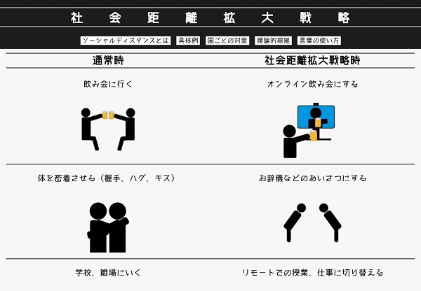
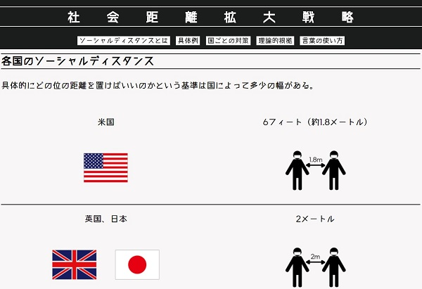
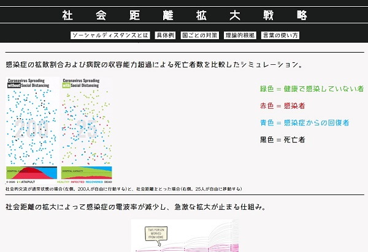

学生にソーシャルディスタンスを促すWebサイト
社会距離拡大戦略
テーマ： ソーシャルディスタンスを促すWebサイト
ターゲット： ソーシャルディスタンスを知らない学生
仕様ツール： Adobeillustrator, HTML,CSS
制作期間： 1ヵ月
作品概要
学生にソーシャルディスタンスを促すWebサイトを制作するという大学課題で制作した。
ピクトグラムをすべて自作し、ソーシャルディスタンスを分かりやすく説明した。



トップに戻る
次の作品を見る